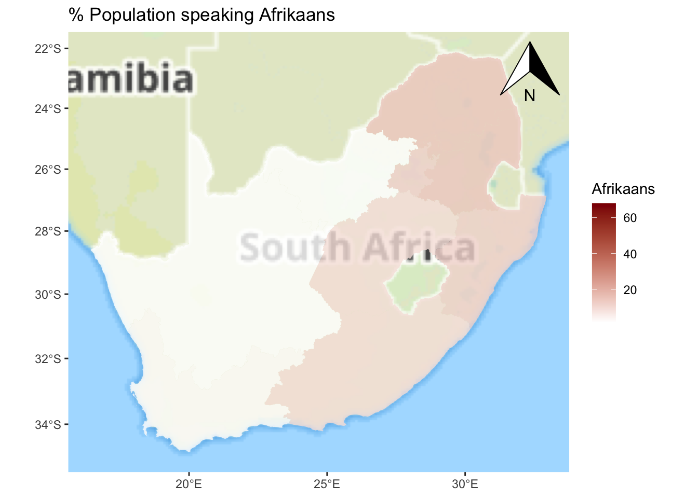

Let’s answer the ‘why?’ question with a quick example of R in use. We will not worry about the exact detail of what the code means at this stage or attempt to explain it in full. Instead, we will largely take it as we find it, copying and pasting from this webpage into the R Console. The focus is on some of what R can do from a geographic perspective and not, at this stage, on how it does it.
If you find that the + sign stays on your screen, in the R Console, for a while and isn’t followed by > then you have either forgotten to hit Enter/Return or have not included all of the code that is needed to complete an operation (to complete a function, for example). You can always press esc on your keyboard and try again.
It was suggested in ‘Getting Started’ that you might want to create a new project for this course (a folder in which to save all the files). If you followed that advice, begin by using File –> Open Project… from the dropdown menus. Or, if you didn’t, you could create a new project now (File –> New Project…). Remember, all it really does is create a new folder in which to store all your files but that is useful because it will ensure your working directory is the same as that folder.
Mac users: to speed-up the rendering of the maps, it is recommended that you change the Backend Graphics Device to AGG. You can do this through the dropdown menus: Tools -> Global Options…, then click on Graphics (next to Basic). This will matter more in later exercises but you might as well do it now.
Step 1
First, we will check that the necessary packages are installed and then require them, which means to load them so they are available to use. The usual way to install a package is with the function, install.packages() so, for example, the graphics package ggplot2 is installed using install.packages("ggplot2"). The code below is a bit more elaborate as it checks which packages have not yet been installed and installs them. However, the two-step process is the same: install and then require,
use install.packages() to install packages – only needs to be done once on your computer, unless you re-install R / replace it with a more recent version;
then use require() to load the desired packages – needs to be done each time R is restarted.
Code
# Checks to see which packages are already installed:installed <-installed.packages()[,1]# Creates a character vector of packages that are required:pkgs <-c("XML", "tidyverse", "readxl", "proxy", "sf", "ggplot2","classInt", "ggspatial")# Checks which of the required packages have not yet been installed:install <- pkgs[!(pkgs %in% installed)]# Installs any that have not yet been installed:if(length(install)) install.packages(install, dependencies =TRUE)# Silently loads (requires) all the packages that are needed:invisible(lapply(pkgs, require, character.only =TRUE))
The use of # indicates a comment in the code. It is there just for explanation. It is not executable code (it is ignored not run).
Step 2
Next, we will download a data table published by Statistics South Africa that provides estimates of the number of people speaking various languages in the South African Provinces in 2011. These data were downloaded from https://superweb.statssa.gov.za/webapi/. The data are found in an Excel spreadsheet, which is read in and manipulated, converting the counts into percentages.
What R allows is the opportunity to map the data without needing to go outside R to use separate software such as GIS. To do so, we will need a ‘blank map’ of the Provinces that can be joined with the data to create a choropleth map (a type of thematic map).
ggplot() +annotation_map_tile(type ="thunderforestlandscape", progress ="none") +geom_sf(data = map, aes(fill = Afrikaans), alpha =0.8, col ="transparent") +scale_fill_gradient(low ="white", high ="dark red") +annotation_north_arrow(which_north ="grid", location ="topright") +ggtitle("% Population speaking Afrikaans")

Step 5
Finally, once we are happy with it, we can export the image in a format suitable for a journal publication or to insert into other documents such as Microsoft Word.
As jpeg, to print quality:
Code
ggsave("mymap.jpg", device ="jpeg", width =7, height =6, units ="in",dpi ="print")
As pdf:
Code
ggsave("mymap.pdf", device ="pdf", width =7, height =6, units ="in")
As bmp, to screen quality:
Code
ggsave("mymap.bmp", device ="bmp", width =7, height =6, units ="in",dpi ="screen")
If we now look in your working directory, they should be there:
Code
list.files(pattern ="mymap")
[1] "mymap.bmp" "mymap.jpg" "mymap.pdf"
Another example
The following example is much more complex so please don’t be put off by it. I have included it to make a simple point – it does not take too many lines of code to produce a high quality visual output. It might take a little bit of searching around online to find the code and instruction to produce exactly what you want but I rarely struggle to find an answer fairly quickly.
I originally developed the following maps in response to the release of the 2021 UK Census data showing the ethnic composition of small area neighbourhoods. The four cities – Birmingham, Leicester, London and Manchester – are the ones that are no longer majority White British (i.e. less than half their population self-identified as White British). A consequence of this demographic change is that the cities are becoming more ethnically diverse, which is what the maps show, using a standardised census geography that I also created in R.
Code
# Read-in the attribute data and the boundary file:df <-read_csv("https://github.com/profrichharris/profrichharris.github.io/blob/main/MandM/data/diversity.csv?raw=true")map <-st_read("https://github.com/profrichharris/profrichharris.github.io/raw/main/MandM/boundary%20files/cities.geojson", quiet =TRUE)# Although more complex, at heart what the following code does is# join the map to the data and then produce a separate map for# each city and time period, using a consistent styledf |>pivot_longer(where(is.numeric), values_to ="index", names_to ="year") %>%mutate(year =paste0("20",substring(year, 3, 4))) %>%left_join(map, ., by ="OAXXCD") %>%mutate(group =paste(CITY, year, sep =" ~ ")) %>%split(.$group) %>%lapply(function(x) {ggplot(data = x, aes(fill = index)) +geom_sf(col ="transparent") +scale_fill_viridis_c("Diversity",values =c(0,0.25,0.5,0.7,0.85,0.95,1)) +annotation_north_arrow(location ="tl",style =north_arrow_minimal(text_size =10),height =unit(0.6, "cm"), width =unit(0.6, "cm")) +annotation_scale(location ="br", style ="ticks", line_width =0.5,text_cex =0.5, tick_height =0.4,height =unit(0.15, "cm"), text_pad =unit(0.10, "cm")) +theme_minimal() +theme(axis.text =element_blank(),axis.ticks =element_blank(),plot.title =element_text(size =8, hjust =0.5),legend.title =element_text(size =7, vjust =3),legend.text =element_text(size =6), panel.grid.major =element_blank(),panel.grid.minor =element_blank(),plot.margin =margin(t =0, r =0, b =0,l =0)) +labs(title =paste0(x$CITY[1], ": ", x$year[1])) }) -> g# The cowplot library offers some additional plotting functionalityif(!("cowplot"%in% installed)) install.packages("cowplot")require(cowplot)# The following gets the common legend for the maps# and stops it being printed 12 times -- once will be enough!legend <-get_legend(g[[1]])lapply(g, function(x) { x +theme(legend.position='none')}) -> g# This brings all the maps together as oneggdraw(plot_grid(plot_grid(plotlist = g, ncol=3, align='v'),plot_grid(NULL, legend, ncol=1, scale =0.5),rel_widths=c(1, 0.1),rel_heights=c(1, 0,1))) -> gprint(g)
Convinced?
Of course, maps can also be produced in open source software such as QGIS and GIS software certainly have their use. R is not automatically better or necessarily a replacement for these. However, what it does offer is an integrated environment for what we might call geographic data science: we can download data from external websites, load and tidy-up those data, fit statistical or other models to them and map the results – all from within R. Our stages of working can be saved as scripts, which are faster to change and modify than using ‘point-and-click’ operations, and we can share our code with other people (even those using different operating systems) facilitating collaborative working and reproducible social-/ science. Finally, there are lots of packages available for reading, visualising, and analysing spatial data in R. Some of them are summarised here. These are attractive reasons for mapping and modelling within R.
Alternatives
Aside from software such as QGIS, an interesting area of development is Geographic Data Science with Python. You can learn more about it here.
Need more convincing?
If you have time, have a look at this exercise that we sometimes use with prospective students at University open days. The idea of the exercise is not to teach the students R but to show them how we use R for geographic data science in the School of Geographical Sciences. What the exercise does is take COVID-19 data for English neighbourhoods, fit statistical models to it and map the results – all in R. Again, it is the ability to use R for all the stages shown below that makes it so useful.
---title: "A Cartographic Answer"execute: warning: false message: false---```{r}#| include: falseinstalled <-installed.packages()[,1]pkgs <-c("XML", "tidyverse", "readxl", "sf", "ggplot2", "classInt", "ggspatial")install <- pkgs[!(pkgs %in% installed)]if(length(install)) install.packages(install, dependencies =TRUE, repos ="https://cloud.r-project.org")```## A worked exampleLet's answer the 'why?' question with a quick example of R in use. **We will not worry about the exact detail of what the code means at this stage or attempt to explain it in full.** Instead, we will largely take it as we find it, copying and pasting from this webpage into the R Console. The focus is on some of what R can do from a geographic perspective and not, at this stage, on how it does it.{width="75"}<fontsize=3>If you find that the `+` sign stays on your screen, in the R Console, for a while and isn't followed by `>` then you have either forgotten to hit `Enter`/`Return` or have not included all of the code that is needed to complete an operation (to complete a function, for example). You can always press `esc` on your keyboard and try again.</font>It was suggested in 'Getting Started' that you might want to create a new project for this course (a folder in which to save all the files). If you followed that advice, begin by using File --> Open Project... from the dropdown menus. Or, if you didn't, you could create a new project now (File --> New Project...). Remember, all it really does is create a new folder in which to store all your files but that is useful because it will ensure your working directory is the same as that folder.{width="75"}<fontsize=3>**Mac users:** to speed-up the rendering of the maps, it is recommended that you change the Backend Graphics Device to AGG. You can do this through the dropdown menus: Tools -> Global Options..., then click on Graphics (next to Basic). This will matter more in later exercises but you might as well do it now.</font>### Step 1First, we will check that the necessary packages are installed and then require them, which means to load them so they are available to use. The usual way to install a package is with the function, `install.packages()` so, for example, the graphics package `ggplot2` is installed using `install.packages("ggplot2")`. The code below is a bit more elaborate as it checks which packages have not yet been installed and installs them. However, the two-step process is the same: install and then require,- use `install.packages()` to install packages -- *only needs to be done once on your computer, unless you re-install R / replace it with a more recent version*;- then use `require()` to load the desired packages -- *needs to be done each time R is restarted*.```{r}#| results: false# Checks to see which packages are already installed:installed <-installed.packages()[,1]# Creates a character vector of packages that are required:pkgs <-c("XML", "tidyverse", "readxl", "proxy", "sf", "ggplot2","classInt", "ggspatial")# Checks which of the required packages have not yet been installed:install <- pkgs[!(pkgs %in% installed)]# Installs any that have not yet been installed:if(length(install)) install.packages(install, dependencies =TRUE)# Silently loads (requires) all the packages that are needed:invisible(lapply(pkgs, require, character.only =TRUE))```{width="75"}<fontsize=3>The use of `#` indicates a comment in the code. It is there just for explanation. It is not executable code (it is ignored not run).</font>### Step 2Next, we will download a data table published by Statistics South Africa that provides estimates of the number of people speaking various languages in the South African Provinces in 2011. These data were downloaded from [https://superweb.statssa.gov.za/webapi/](https://superweb.statssa.gov.za/webapi/){target="_blank"}. The data are found in an Excel spreadsheet, which is read in and manipulated, converting the counts into percentages.```{r}download.file("https://github.com/profrichharris/profrichharris.github.io/blob/main/MandM/data/table_2022-06-22_17-36-26.xlsx?raw=true", "language.xlsx", quiet =TRUE, mode ="wb")read_xlsx("language.xlsx", sheet ="Data Sheet 0", skip =8) |>rename(Name =2) |>drop_na(Afrikaans) |>select(-1) |>mutate(across(where(is.numeric), ~round(. / Total *100, 2))) -> languages```Here is the top of the data, viewed in the R environment:```{r}head(languages)```There is often more than one way of achieving something in R. Here we could also use,```{r}slice_head(languages, n =6)```### Step 3What R allows is the opportunity to map the data without needing to go outside R to use separate software such as GIS. To do so, we will need a 'blank map' of the Provinces that can be joined with the data to create a choropleth map ([a type of thematic map](https://www.maptive.com/thematic-map-examples/){target="_blank"}).First, we will download a pre-existing map, also from [https://superweb.statssa.gov.za/webapi/](https://superweb.statssa.gov.za/webapi/){target="_blank"}.```{r}#| results: falsedownload.file("https://github.com/profrichharris/profrichharris.github.io/blob/main/MandM/boundary%20files/mapview.kmz?raw=true", "map.kmz", quiet =TRUE, mode ="wb")unzip("map.kmz")st_read("doc.kml") |>select(-Description) -> map```Here is the outline of that map:```{r}ggplot() +geom_sf(data = map)```### Step 4Now we can link the data table to the map```{r}map |>left_join(languages, by ="Name") -> map```and then plot one of the variables.```{r}ggplot() +annotation_map_tile(type ="cartolight", progress ="none") +geom_sf(data = map, aes(fill = IsiXhosa), alpha =0.8) +scale_fill_gradient(low ="white", high ="dark blue") +ggtitle("% Population speaking Xhosa")```</br> The really nice thing about this is that it is now very easy to change the appearance of the map with only minor updates to the code.```{r}ggplot() +annotation_map_tile(type ="cartodark", progress ="none") +geom_sf(data = map, aes(fill = English), alpha =0.8) +scale_fill_gradient(low ="white", high ="dark red") +ggtitle("% Population speaking English")``````{r}ggplot() +annotation_map_tile(type ="thunderforestlandscape", progress ="none") +geom_sf(data = map, aes(fill = Afrikaans), alpha =0.8, col ="transparent") +scale_fill_gradient(low ="white", high ="dark red") +annotation_north_arrow(which_north ="grid", location ="topright") +ggtitle("% Population speaking Afrikaans")```### Step 5Finally, once we are happy with it, we can export the image in a format suitable for a journal publication or to insert into other documents such as Microsoft Word.As jpeg, to print quality:```{r}ggsave("mymap.jpg", device ="jpeg", width =7, height =6, units ="in",dpi ="print")```As pdf:```{r}ggsave("mymap.pdf", device ="pdf", width =7, height =6, units ="in")```As bmp, to screen quality:```{r}ggsave("mymap.bmp", device ="bmp", width =7, height =6, units ="in",dpi ="screen")```If we now look in your working directory, they should be there:```{r}list.files(pattern ="mymap")```## Another exampleThe following example is much more complex so please don't be put off by it. I have included it to make a simple point -- it does not take too many lines of code to produce a high quality visual output. It *might* take a little bit of searching around online to find the code and instruction to produce exactly what you want but I rarely struggle to find an answer fairly quickly.I originally developed the following maps in response to the release of the 2021 UK Census data showing the ethnic composition of small area neighbourhoods. The four cities -- Birmingham, Leicester, London and Manchester -- are the ones that are no longer majority White British (i.e. less than half their population self-identified as White British). A consequence of this demographic change is that the cities are becoming more ethnically diverse, which is what the maps show, using a standardised census geography [that I also created in R](https://profrichharris.github.io/census/harmonised/){target="_blank"}.```{r}#| fig-height: 9#| fig-width: 8.5# Read-in the attribute data and the boundary file:df <-read_csv("https://github.com/profrichharris/profrichharris.github.io/blob/main/MandM/data/diversity.csv?raw=true")map <-st_read("https://github.com/profrichharris/profrichharris.github.io/raw/main/MandM/boundary%20files/cities.geojson", quiet =TRUE)# Although more complex, at heart what the following code does is# join the map to the data and then produce a separate map for# each city and time period, using a consistent styledf |>pivot_longer(where(is.numeric), values_to ="index", names_to ="year") %>%mutate(year =paste0("20",substring(year, 3, 4))) %>%left_join(map, ., by ="OAXXCD") %>%mutate(group =paste(CITY, year, sep =" ~ ")) %>%split(.$group) %>%lapply(function(x) {ggplot(data = x, aes(fill = index)) +geom_sf(col ="transparent") +scale_fill_viridis_c("Diversity",values =c(0,0.25,0.5,0.7,0.85,0.95,1)) +annotation_north_arrow(location ="tl",style =north_arrow_minimal(text_size =10),height =unit(0.6, "cm"), width =unit(0.6, "cm")) +annotation_scale(location ="br", style ="ticks", line_width =0.5,text_cex =0.5, tick_height =0.4,height =unit(0.15, "cm"), text_pad =unit(0.10, "cm")) +theme_minimal() +theme(axis.text =element_blank(),axis.ticks =element_blank(),plot.title =element_text(size =8, hjust =0.5),legend.title =element_text(size =7, vjust =3),legend.text =element_text(size =6), panel.grid.major =element_blank(),panel.grid.minor =element_blank(),plot.margin =margin(t =0, r =0, b =0,l =0)) +labs(title =paste0(x$CITY[1], ": ", x$year[1])) }) -> g# The cowplot library offers some additional plotting functionalityif(!("cowplot"%in% installed)) install.packages("cowplot")require(cowplot)# The following gets the common legend for the maps# and stops it being printed 12 times -- once will be enough!legend <-get_legend(g[[1]])lapply(g, function(x) { x +theme(legend.position='none')}) -> g# This brings all the maps together as oneggdraw(plot_grid(plot_grid(plotlist = g, ncol=3, align='v'),plot_grid(NULL, legend, ncol=1, scale =0.5),rel_widths=c(1, 0.1),rel_heights=c(1, 0,1))) -> gprint(g)```## Convinced?Of course, maps can also be produced in open source software such as [QGIS](https://www.qgis.org/en/site/){target="_blank"} and GIS software certainly have their use. R is not automatically better or necessarily a replacement for these. However, what it does offer is an integrated environment for what we might call geographic data science: we can download data from external websites, load and tidy-up those data, fit statistical or other models to them and map the results -- all from within R. Our stages of working can be saved as scripts, which are faster to change and modify than using 'point-and-click' operations, and we can share our code with other people (even those using different operating systems) facilitating collaborative working and reproducible social-/ science. Finally, there are **lots** of packages available for reading, visualising, and analysing spatial data in R. Some of them are [summarised here](https://cran.r-project.org/web/views/Spatial.html){target="_blank"}. These are attractive reasons for mapping and modelling within R.## Alternatives{width="100"}Aside from software such as QGIS, an interesting area of development is Geographic Data Science with Python. [You can learn more about it here](https://geographicdata.science/book/intro.html){target="_blank"}.## Need more convincing?If you have time, have a look at [this exercise](https://profrichharris.github.io/openday/){target="blank"} that we sometimes use with prospective students at University open days. The idea of the exercise is not to teach the students R but to show them how we use R for geographic data science in the School of Geographical Sciences. What the exercise does is take COVID-19 data for English neighbourhoods, fit statistical models to it and map the results -- all in R. Again, it is the ability to use R for all the stages shown below that makes it so useful.<fontsize=2>Source: [R for Data Science](https://r4ds.had.co.nz/introduction.html){target="\"_blank"}</font>